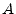
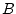
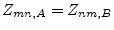
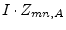
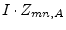
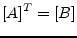

First some definition must be done:
Reciprocal Networks:
Two networks  and  are reciprocal to each other if their
transimpedances have the following relation:
|  | (5.1) |
That means: Drive the current  into node
into node  of circuit and
at node
of circuit and
at node  the voltage
 appears. In circuit
it is just the way around.
the voltage
 appears. In circuit
it is just the way around.
Adjoint Networks:
Network and network are adjoint to each other if the following
equation holds for their MNA matrices:
|  | (5.2) |